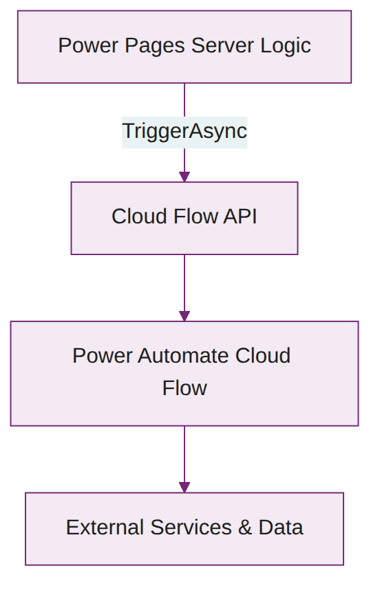
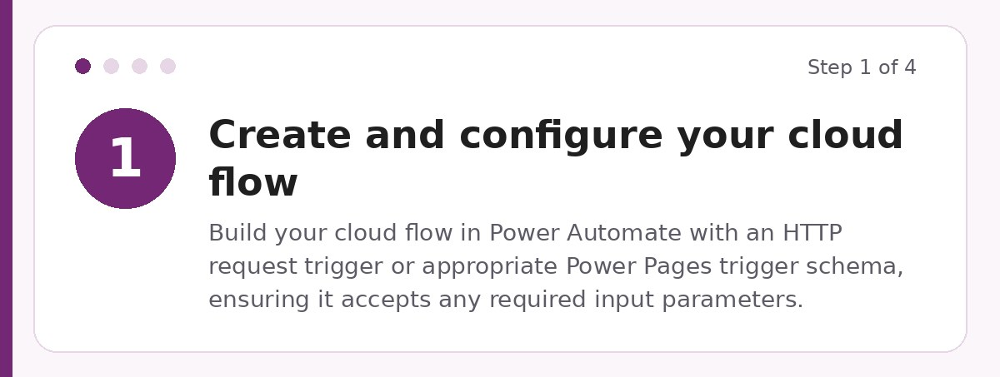
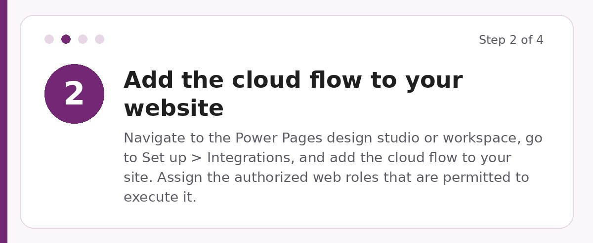
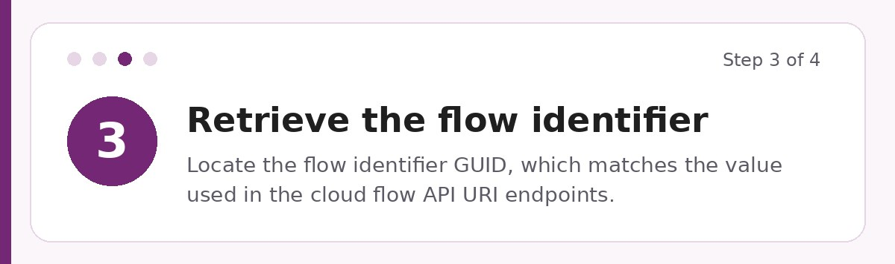
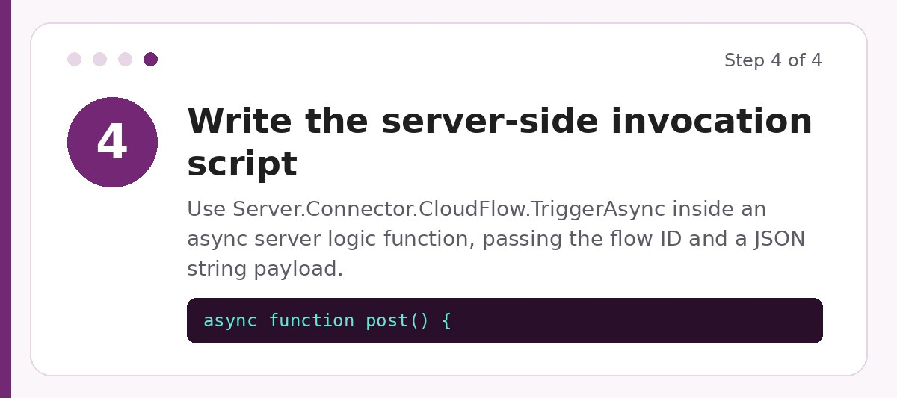

Learn how to trigger Power Automate cloud flows securely from server logic in Power Pages using Server.Connector.CloudFlow.TriggerAsync.
Extending server-side business processes in Power Pages no longer requires standalone custom integration endpoints. With the native ability to invoke Power Automate cloud flows directly from server logic, makers and developers can bridge website interactions with over 1,400 external connectors, approval engines, and downstream enterprise systems securely on the server.
This feature utilizes the Server.Connector.CloudFlow namespace, providing a robust server-side equivalent to client-side cloud flow APIs while executing logic within a controlled authorization context. By leveraging existing automation investments, organizations can eliminate redundant code and streamline cross-platform business workflows.
Server logic in Power Pages provides built-in objects under the server namespace to handle common tasks such as logging, Dataverse CRUD operations, and calling external services. The addition of cloud flow invocation allows server scripts to trigger background automations asynchronously and evaluate response envelopes instantly.

When a cloud flow is triggered from server logic, the site ID, site URL, and signed-in user ID are automatically appended to the payload. This maintains full context traceability across your Power Platform environment without requiring manual header injection in every script.
To successfully invoke a cloud flow from your server scripts, you must configure the flow, assign the appropriate web roles, and reference its unique identifier within your code.

Build your cloud flow in Power Automate with an HTTP request trigger or appropriate Power Pages trigger schema, ensuring it accepts any required input parameters.

Navigate to the Power Pages design studio or workspace, go to Set up > Integrations, and add the cloud flow to your site. Assign the authorized web roles that are permitted to execute it.

Locate the flow identifier GUID, which matches the value used in the cloud flow API URI endpoints.

Use Server.Connector.CloudFlow.TriggerAsync inside an async server logic function, passing the flow ID and a JSON string payload.
async function post() {
let flowId = "00000000-0000-0000-0000-000000000001";
let payload = JSON.stringify({ Location: "Seattle" });
let response = await Server.Connector.CloudFlow.TriggerAsync(flowId, payload);
let result = JSON.parse(response);
if (!result.IsSuccessStatusCode) {
Server.Logger.Error("Cloud flow trigger failed: " + result.ReasonPhrase);
return JSON.stringify({ success: false, error: result.ReasonPhrase });
}
return JSON.stringify({ success: true, flowResponse: result.Body });
}When executing cloud flows from server scripts, understanding response envelopes and asynchronous behavior prevents unexpected errors. Always ensure your functions are marked as async and use await when calling TriggerAsync.
| Response Code | Condition | Handling Strategy |
|---|---|---|
| 200 OK | Flow executed successfully and returned a response body. | Parse the JSON string in result.Body to process downstream data. |
| 202 Accepted | Flow completed successfully without a response action. | Treat execution as successful; the response body will be empty. |
| Error Status | Flow failed or authorization rules were violated. | Check Server.Logger for error details and inspect IsSuccessStatusCode. |
Tip: Remember that if you migrate your Power Pages site to another Dataverse environment, you must manually register and re-link the cloud flow in the target environment before invoking it via server logic.
You use the Server.Connector.CloudFlow.TriggerAsync method, passing the unique flow identifier and an optional JSON payload.
The cloud flow must be added to the site with an authorized web role assigned, and the signed-in user must hold one of those designated roles.
The flow returns a 202 Accepted status code along with an empty body, which is treated as a successful execution.
No, the site ID, site URL, and signed-in user ID are automatically included in the trigger payload by the platform.